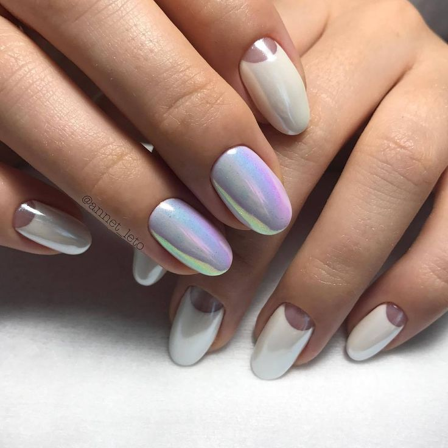

Pico de montaña
Las pico de montaña son la versión corta de las uñas stiletto. Su característica de forma puntiaguda se consigue limando los lados hasta afilar la punta.

Ovalada
A diferencia de las redondas, en este caso las uñas se estrechan a medida que vamos hacia la punta.

Ballerina
La uña ballerina es un estilo muy lindo y cómodo hecho en acrílico, se caracteriza por tener una terminación cuadrada y ligeramente puntiaguda.